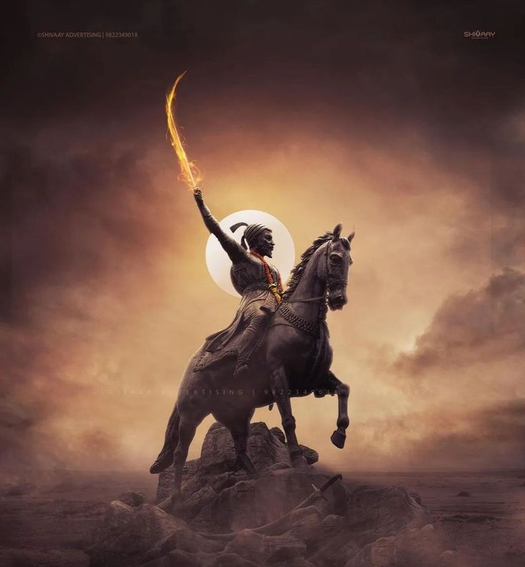

(February 19, 1630 –April 3, 1680), popularly known as Chhatrapati Shivaji Maharaj, was an Indian king
and the
founder of the Maratha Empire.[1] Shivaraya carved out his own independent kingdom from the
decaying Adilshahi of Bijapur and founded the Maratha Empire. A.D. He was formally enthroned as
Chhatrapati in 1674 at Raigad Fort
During his reign, Shivaji Maharaj had both alliances and enmity with the Mughal Empire, the
Qutub Shahi of Gowalkonda, the Adil Shahi of Bijapur and the European colonial powers.
Chhatrapati Shivaji Maharaj built a powerful and progressive state on the strength of a
disciplined army and a well-organized administrative system. Besides repairing the forts in the
coastal and interior regions, he also built many new forts. Shivarai established a competent and
progressive civil government with disciplined administrative organizations. He revived the
ancient Hindu political traditions, court conventions.
With his excellent knowledge of the terrain, amazing speed of movement and the technique of
guerilla poetry, he successfully fought the mighty Mughal and Adil Shahi forces with a small
force. He encouraged the use of Marathi and Sanskrit instead of Parsi, which was the prevailing
language of the time, in governance. During the Indian freedom struggle, nationalist leaders
used Shivaji Maharaj's heroic stories to rally people and boost their morale.
Shivaji
Maharaj's legacy varied with observers and time. But nearly two centuries after his death, he
began to gain more prominence with the rise of the Indian independence movement as many Indian
freedom fighters considered him a proto-nationalist and Hindu hero. Shivaji Maharaj has a great
influence in the social and political history of Maharashtra. Shivaji Maharaj is an integral
part of the Marathi people's identity.[6] Shivaji Maharaj's birthday is celebrated as Shiv
Jayanti.[7]

Chatrapati Shivaji Maharaj had a multifaceted vision that encompassed various aspects of
governance, military strategy, and social justice. Some key elements of his vision
include:
1. Establishment of a Hindu Kingdom: Shivaji Maharaj aimed to establish a Hindu kingdom
that would uphold the values of dharma (righteousness) and protect the interests of the Hindu
community. He envisioned a sovereign state free from foreign domination, particularly from the
Mughal Empire.
2. Military Strategy: Shivaji Maharaj recognized the importance of a strong military in
defending his kingdom and expanding its territories. He emphasized the need for guerrilla
warfare tactics, mobility, and innovation in military strategy to counter larger and more
powerful adversaries.
3. Fortification and Defense: Understanding the strategic importance of fortification,
Shivaji Maharaj built and strengthened forts across his kingdom. These forts served as defensive
strongholds and administrative centers, contributing to the overall security and stability of
his empire.
4. Administrative Reforms: Shivaji implemented various administrative reforms aimed at
promoting efficient governance and decentralization of power. His establishment of the Ashta
Pradhan (Council of Eight Ministers) exemplified his vision for a well-organized administrative
system that could effectively govern his diverse territories.
5. Religious Tolerance: Despite being a devout Hindu, Shivaji Maharaj demonstrated
religious tolerance and respect for other faiths. He believed in the coexistence of different
religious communities within his kingdom and ensured that his subjects were treated fairly and
justly, regardless of their religious affiliation.
Overall, Shivaji Maharaj's vision encompassed the establishment of a strong, prosperous, and
just kingdom that would uphold the principles of dharma, protect the interests of its people,
and serve as a beacon of Hindu culture and civilization. His legacy continues to inspire
reverence and admiration among millions of people in India and beyond.
Chatrapati Shivaji Maharaj conveyed several important messages through his actions, words,
and
policies. Some of the key messages attributed to him include:
1. Courage and Fearlessness: Shivaji Maharaj exemplified the virtues of courage and
fearlessness in the face of adversity. He inspired his followers to stand firm in their
convictions and never back down from challenges.
2.Self-Reliance and Independence: Shivaji Maharaj advocated for self-reliance and
independence from foreign rule. He believed in the importance of building strong indigenous
institutions and resisting external domination.
3.Justice and Fairness: Shivaji Maharaj emphasized the principles of justice and
fairness in governance. He sought to establish a just and equitable society where every
individual, regardless of caste, creed, or background, could receive fair treatment under the
law.
4. Religious Tolerance: Shivaji Maharaj promoted religious tolerance and harmony among
different religious communities. He respected the diversity of beliefs within his kingdom and
ensured that his subjects could practice their faith freely without fear of persecution.
5. Empowerment of the Masses: Shivaji Maharaj empowered the common people and sought to
uplift the marginalized sections of society. He implemented policies aimed at promoting social
welfare, economic development, and the welfare of his subjects.
6. Pride in Heritage and Culture: Shivaji Maharaj instilled a sense of pride in Hindu
heritage and culture among his followers. He encouraged the preservation and promotion of
indigenous traditions, languages, and customs.
7. Strategic Vision for Nation-Building: Shivaji Maharaj had a strategic vision for
nation-building, centered around the establishment of a strong and prosperous Hindu kingdom. He
laid the foundation for a decentralized administrative system that could effectively govern his
territories and ensure their long-term stability and prosperity.
Shiv Jayanti:
Chhatrapati Shivaji Maharaj Jayanti or Shiva Jayanti is a famous festival and
celebration in Maharashtra . This festival is celebrated all over Maharashtra on February 19 as
fixed by the Maharashtra government on the birth anniversary of Chhatrapati Shivaji Maharaj, the
founder of the Maratha Empire . This day is a public holiday in Maharashtra . [1] This festival
is also celebrated on a small scale in some places outside Maharashtra.
History:
Beginning of Shiva Jayanti: In 1869, Mahatma Phule discovered Chhatrapati Shivaji Maharaj's
mausoleum at Raigad and wrote the first long poem on his life. Jyotiba had applied that the
government should take over the arrangement of Shivaji Maharaj's mausoleum at Raigad. In 1870,
Mahatma Phule celebrated the first "Shiva Jayanti" in Pune. Then in 1895, Lokmanya Tilak started
Shiv Jayanti celebrations. The intention behind this was that the people should come together on
the occasion of such festivals to arouse patriotism and use it to fight against the British. In
the early days, Shiv Jayanti was celebrated only in Maharashtra. But in the first decade of the
20th century, the festival of Shiva Jayanti reached Bengal.
Lokmanya Tilak initiated the celebration of Shiv Jayanti and started celebrating Shiv Jayanti
vigorously in entire Maharashtra. It was necessary for the youth to unite against the British
and to become nationalistic, for which Tilak celebrated Shiv Jayanti every year with great
fanfare, a tradition that continues even today. In the 20th century, Dr. Babasaheb Ambedkar also
celebrated Shiv Jayanti, he presided over the Shiv Jayanti program twice. Since then, Shiv
Jayanti began to be celebrated on a large scale. On 3rd May 1927 at Badlapur near Mumbai , Dr.
Shiv Jayanti Utsav. It was celebrated under the presidency of Babasaheb Ambedkar.The
villagers of Badlapur had invited Babasaheb Ambedkar for the program without caste
discrimination.